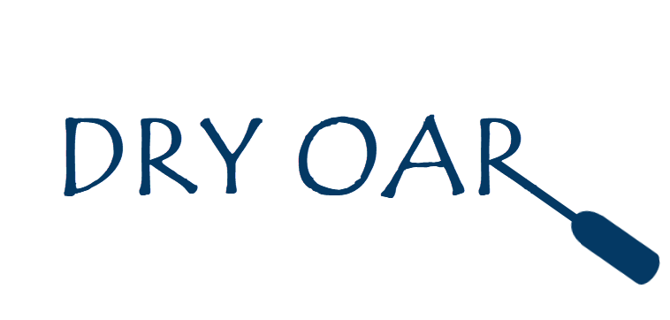

Overview
Purpose
To inform prospective clients of our services and to expand our online presence to entice new business. Needs to be easily navigatable.
Audience
Families, young adults, and experienced rafters, especially those who enjoy adventure, nature, water, and the outdoors. Include relaxing events as well.
Branding
Website Logo
Style Guide
Color Palette
Palette URL:
https://coolors.co/b1dafc-4f4044-054376-9bc1bc-273f3b| Primary | Secondary | Accent 1 | Accent 2 |
|---|---|---|---|
| #9BC1BC | #B1DAFC | #043964 | #273F3B |
Typography
Heading Font: Kalam
Paragraph Font: Hind Siliguri
Normal paragraph example
The best Whitewater Rafting in Colorado, White Water Rafting Company offers rafting on the Colorado and Roaring Fork Rivers in Glenwood Springs. Since 1974, we have been family owned and operated, rafting the Shoshone section of Glenwood Canyon and beyond.
Colored paragraph example
Trips vary from mild and great for families, to trips exclusively for physically fit and experienced rafters. No matter what type of river adventures you are seeking, White Water Rafting Company can make it happen for you.
Navigation
Site Map
Wireframes
Home